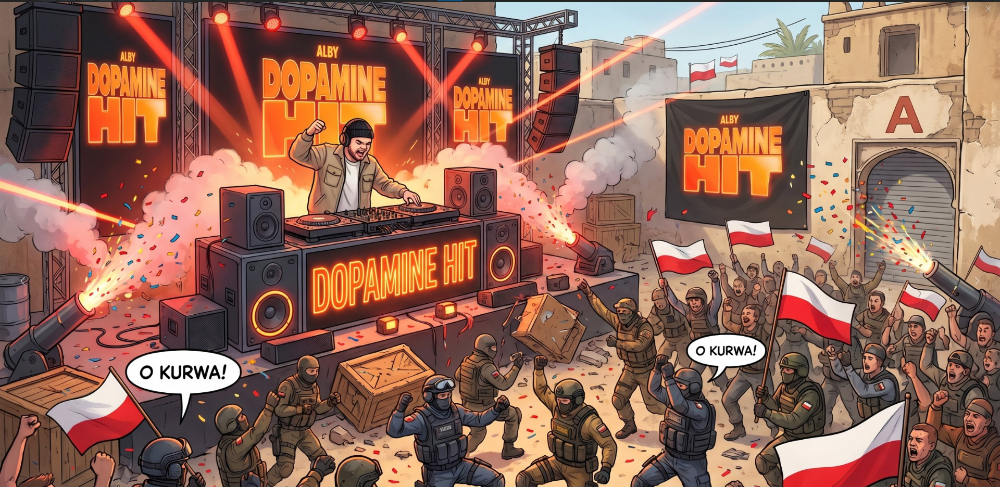
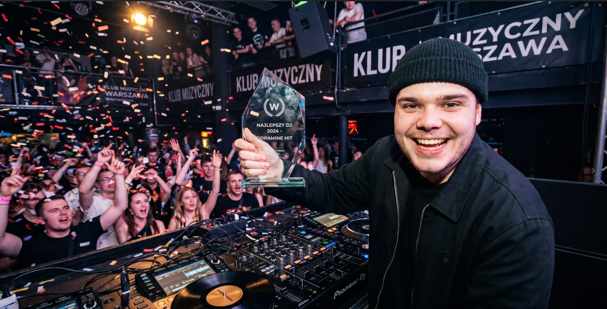
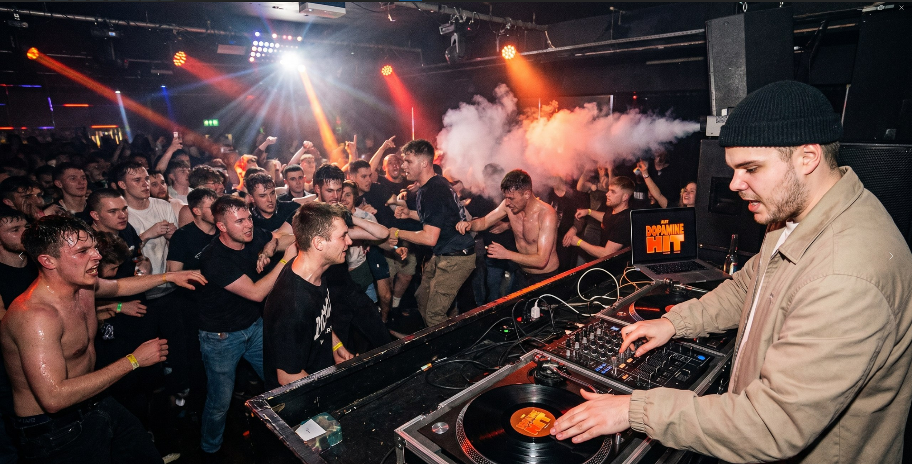
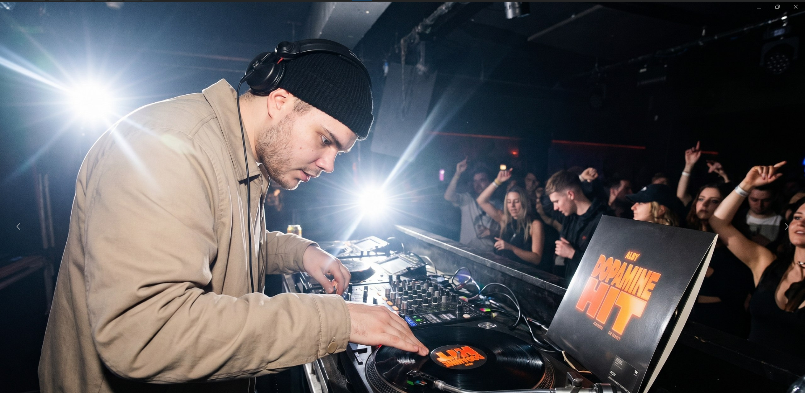

Ты обмолвилась, что твои YouTube Shorts, сгенерированные LLM и AI-инструментами ещё в 2025 году, набрали суммарно полмиллиона просмотров, и никто даже не догадался, что это AI. В чём секрет создания контента, который не выглядит как бесдушный «нейрослоп»?
Секрет в том, что отдавать все полностью на аутсорс AI не стоит. Да, можно допилить задумку, сгенерировать картинки и озвучку. Но при этом за всем этим всегда должно оставаться что-то человеческое. И да, могу еще сделать такой вывод: никогда не делайте видосы спустя рукава просто потому что “надо”. Алгоритмы ютуба - вещь абсолютная бездушная: сделал плохо → не залетело → меньше пул показов в будущем. Надо понимать, что ты делаешь и зачем. Если ты продюссируешь аккаунт по той теме, которая тебе не интересна, стоит заходить под иным углом, пробовать вносить свои видение и применять свои собственные подходы. А если начинать вести аккаунт исключительно по той теме, которая тебе интересна, то при правильном подходе можно не особо напрягаясь набирать тысячи просмотров — канал с контентом по моей любимой игре Cyberpunk2077 не даст соврать.

Расскажи историю про ElevenLabs! За что тебя перманентно забанили по IP со всех аккаунтов и как удалось вернуться к работе с платформой?
Это достаточно забавная история. Я использовала ElevenLabs для генерации озвучки на свои каналы, и в один прекрасный день у меня закончились токены на аккаунте. Ну, не проблема, подумала я. Просто зайду с другого гугло-аккаунта. И вот за это мне и дали пермобан :) Да, my bad, нужно было включить впн, но я не знала, что все так строго. Однако история на этом не закончилась. Пару недель назад мне нужно было сгенерировать музыку для своей игры Kadence, и я решила вновь осмелиться зайти на ElevenLabs. Каково было мое удивление, когда я увидела, что бана больше нет. Причем причина этого нигде указана не была. Ну и ладно.
Как выглядит твоя пайплайн-цепочка при генерации визуала и медиа? (От идеи в голове ➔ prompt engineering ➔ Nano-Banana / GPT-Image ➔ финал).
Все зависит от направления и тематики контента на канале. Может быть просто идея, а может быть инфоповод. Возможно и что-то, предложенное LLM — здесь главное дать полный контекст. Ну и конечно написание промптов — тот самый момент, когда нужно дать инструкции. Затем идет либо генерация картинок, либо мой собственный записанный видеоконтент. Следующий этап — генерация голосовой озвучки на ElevenLabs. В финальной стадии все это собирается воедино в DaVinci Resolve либо Vegas Pro и отправляется на ютуб. Ранее использовала и CapCut, в нем получается поистине уникальный контент, но, к сожалению, оплатить подписку не удалось, хотя я пыталась всеми возможными способами.
Какой твой любимый мем или арт, сгенерированный нейросетью за последнее время?
Я бы выделила целую серию мемов, сгенерерированную мною пару месяцев назад. На ней изображен наш польский талант Владислав в образе наилучшего диджея Польши.





